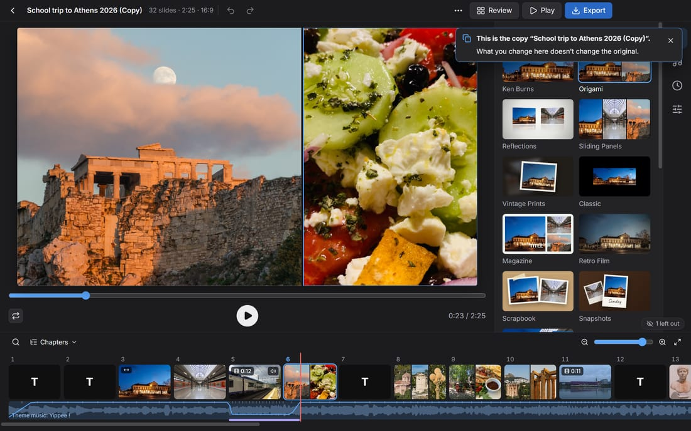
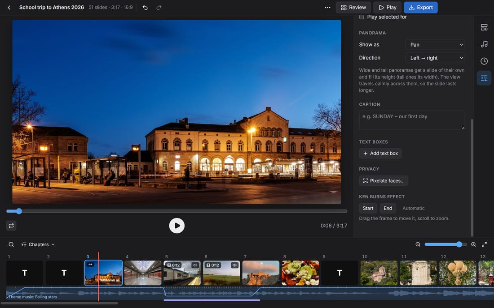
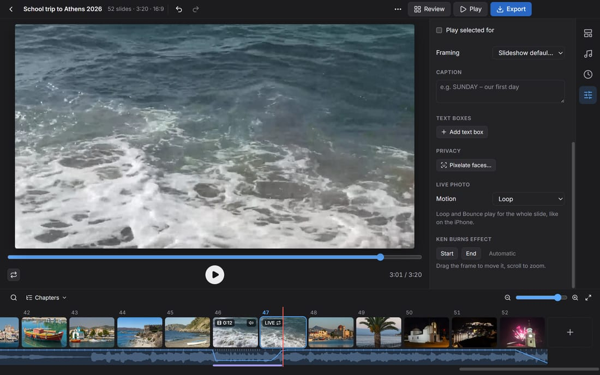
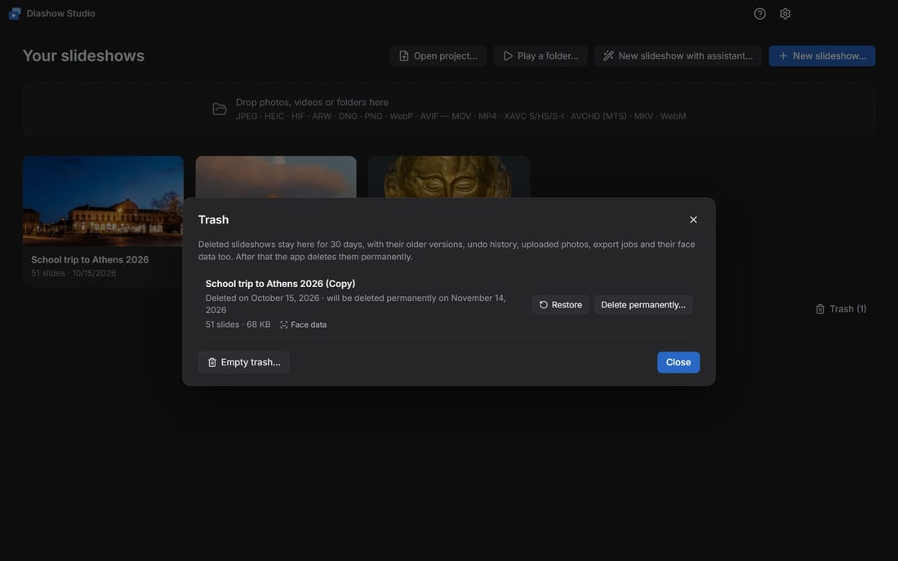

Handbook
Everything for your first slideshow and beyond. The same handbook is built into the app: press F1.
Getting started
Diashow Studio turns photos, videos and music into a slideshow and saves it as an MP4 video. Everything runs on your PC, without the internet.
The quickest way is the assistant. It opens on the first start, and later from New slideshow with assistant… on the home screen.
- Photos and videos: choose single files or a whole folder. Subfolders are included.
- Theme and music: click a theme. Every theme comes with music; songs of your own replace it.
- Show or export: play the slideshow or save it as a video.

Other ways to start a slideshow:
- Drag photos, videos or folders into the window.
- New slideshow… picks files. Play a folder… shows a folder as a slideshow straight away.
- Open project… loads a
.dshowfile, e.g. a packed project from another PC.
Slideshows are saved automatically, in Documents\Diashow Studio. New photos are prepared in the background; you can carry on working right away.
The home screen
Each slideshow has a card on the home screen; a click opens it. Point at the card to see its buttons: Duplicate, Archive as ZIP…, Clean up after the project… and Delete slideshow….

- Adding photos to a slideshow: drag photos, videos or folders from Explorer onto its card; the card shows Add to this slideshow. When you let go, the slideshow opens and the photos go into their day by capture time (with a new day title if the slideshow has day titles). What is in it already is skipped; Ctrl+Z takes it all back in one step.
- Dropped on Drop photos, videos or folders here or anywhere else on the home screen, they make a new slideshow.
- While a dialog is open (e.g. Settings), the window takes no files, and a hint says Close the dialog first. Only the assistant takes photos then too.
- Trash (n) at the bottom of the home screen opens the trash.
Duplicate
Duplicate (on the card or in the ⋯ menu) makes an independent copy, e.g. a version for the parents' evening with more pixelated faces next to the version for the class. The copy is called “Class trip (Copy)”, “Class trip (Copy 2)” and so on, and opens in the editor right away. What you change there doesn't change the original.

- The copy holds everything the slideshow has: slides, settings, music, edits, captions, pixelation, the people list with the face data, and the deletion date. The title in the video stays “Class trip”.
- Older versions, undo history and export jobs stay with the original.
- Photos the class uploaded and pasted pictures belong to both slideshows. Cleaning up and deleting leave them as long as the other slideshow uses them, also from the trash.
Editing
The editor has three areas: the preview in the middle, the tabs Themes, Music, Duration and Slide on the right, and the filmstrip with every slide at the bottom.

- Order: drag slides in the filmstrip. Dropping a slide on the middle of another combines both into one slide.
- Several slides: Ctrl+click, Shift+click or Ctrl+A. The Slide tab then changes them all together: duration, framing, speed, video sound, Live Photo motion, pixelation, or Leave out of the slideshow.
- Time on screen: drag the right edge of a card; a double-click there sets it back to automatic. For the selected slide, Play selected for in the Slide tab does the same.
- Framing: drag in the preview to move the photo, scroll to zoom, double-click to reset.
- Photos on a slide: in themes with several photos per slide, + and − in the Slide tab make the slide take in or give up photos. Split into single slides and Combine into one slide (in the slide's menu, right-click) change the groups.
- Text: Add text slide (the + button at the end of the filmstrip or a slide's menu) creates a text slide. Add text box in the Slide tab puts text on a photo; drag it in the preview, double-click to type.
- Chapters: the ⋯ menu has Day titles from capture date, Chapters from folder names, Sort by capture date and Add end credits.
- Undo: Ctrl+Z, redo with Ctrl+Y. This works after a restart too: each slideshow keeps its last 100 steps.
Tip: Space plays the preview, ← and → step from slide to slide.
Adding and inserting photos
- Adding: drag photos, videos or folders into the window, or use the + button at the end of the filmstrip with Add photos and videos… and Add folder…. They go in behind the selected slide, or at the end when nothing is selected, but in front of End credits.
- Inserting at a place: drag them from Explorer between two cards of the filmstrip; a blue line shows where they go. Dropped on the middle of a card, they join that slide when the theme shows several photos per slide and there is room.
- Copy and paste: files copied in Explorer (Ctrl+C) go in behind the selected slide with Ctrl+V, or without a selection at the end in front of the end credits. A copied picture without a file, such as a screenshot taken with Win+Shift+S, is saved in
Documents\Diashow Studio\Pasted. - Insert… in a slide's menu picks files and puts them behind that slide.
Live Photos and RAW+JPEG go in as one photo. The new slides are selected afterwards; Ctrl+Z takes back the whole insert in one step. In themes with several photos per slide, the other slides stay as they are (see Group automatically under Themes).
What is already in the slideshow
Photos and videos that are already in the slideshow don't go in again, whichever way they come, also through the assistant or as uploads over the Wi-Fi. "Already there" means:
- the same file, also when its slide is left out;
- a copy under another name that is identical byte for byte;
- the same photo as HEIC and as JPEG from the same phone. Burst photos all go in.
A notice at the bottom right says how many were skipped. Show selects the existing slides, Add anyway adds them after all. Smaller copies, e.g. from WhatsApp, are found by Find rejects… (see Review).
Filmstrip: zoom, search and chapters
- Zoom: − and + or the slider above the filmstrip make the slides smaller or larger, and so does Ctrl+mouse wheel over the filmstrip. Show the whole slideshow fits every slide into the width. Small cards show only pictures; a thin blue line marks each chapter.
- Overview: when the slideshow is too long for the smallest cards (from about 200 slides), the filmstrip becomes an overview: each slide is a thin bar in the colour of its picture, with chapter marks, the selection and the search matches. A click selects a slide and shows it, a double-click or Ctrl+mouse wheel zooms back in there. ← and → still go from slide to slide.
- Search: Ctrl+F or the magnifier. It looks in file names, chapters, captions, text slides, text boxes, names from the people list and the capture date (“12 May”, “May 12”, “Tuesday”, “May 2025”; “12/5” in the order your Windows language writes dates). “Video” and “Live” find videos and Live Photos. With several words, each must match.
- When a word is in the slideshow as a name or text (“Jan”, “Sunset.jpg”, “Version 1.5”), only that is searched, not the date. Then “Jan.”, “January 2026” or “12 Jan” find the date.
- The matches are listed and marked yellow in the filmstrip. Enter / Shift+Enter or F3 / Shift+F3 go to the next / previous match, Esc closes the search.
- Chapters: the Chapters menu lists the title, chapters and text slides with their time; a click jumps there.
Marks on the cards: a double arrow for panoramas, LIVE for Live Photos (with the loop or bounce sign), a slider mark for edited photos.
Editing photos
Crooked or sideways phone photos are fixed as in Photos on the Mac: select the photo and click Edit in the Slide tab (or Edit in the slide's menu). Videos are edited the same way.
- Rotate: the arrows turn the photo by 90°. Ctrl+R turns every selected photo to the left.
- Straighten: the slider tilts the picture by up to 45°, without empty corners.
- Crop: drag the corners and edges of the frame. Aspect keeps a shape (Free, Original, 1:1, 4:3, 3:2, 16:9, 9:16).
- Light and colour: Brightness, Contrast, Warmth and Saturation, each from −100 to +100. Against orange indoor light, drag Warmth to the left. A double-click sets a slider back to 0.
- Reset takes everything back, Cancel (Esc) drops the changes, Done (Enter) keeps them.

The edited photo is used everywhere: on every slide, in the filmstrip, in Review and in the export. Pixelated faces stay pixelated. The light and colour sliders are also in the Slide tab; there they apply to every selected photo.
Themes and looks
The theme decides how slides look and change. There are 11 themes, e.g. Ken Burns (slow moves across the photo), Magazine (several photos in a grid) or Snapshots (instant photos landing on a table).
- Themes with several photos per slide arrange them automatically. In the Slide tab you choose another Layout, or Free for your own collage: drag the photos, resize them at the corner, turn them with the knob at the top.
- Group automatically: slides you combined or split keep their photos, also after a theme change. Above the filmstrip you then see e.g. 3 fixed slides · Group automatically; a click spreads all photos by the theme's pattern again. For single slides, Group automatically is in the slide's menu.
- The look (Natural, Vivid, Warm, Cool, Dramatic, Faded, Mono, Noir) colours only the photos and videos, never the background.
- Crop photos to fill (Duration tab) applies to the whole slideshow; any photo can be an exception with Whole picture in the Slide tab.
- Title: title text, font, size, colour and Title animation (handwriting, typewriter, big word with a line) are set in the Themes tab. Each text slide can have its own animation in the Slide tab, including rolling End credits.
- Ken Burns: a photo's start and end framing is set in the Slide tab under Ken Burns effect.
- In the Classic theme you choose the transition (Dissolve, Push, Cube …) in the Duration tab.
Panoramas
Very wide photos, such as panoramas from a phone, are shown as in Photos on the Mac: they get a slide of their own, fill its height, and the view travels calmly from one end to the other. Very tall photos travel from top to bottom.

- A photo counts as a panorama from twice as wide as high on, when it is clearly wider than the slideshow (in 16:9 from about 2.5:1). In the filmstrip its slide carries a double arrow.
- Its slide lasts longer the wider it is, at most two and a half times a photo's time. A time of your own still applies.
- In the Slide tab, Panorama sets whether it shows as Pan, Whole picture or Crop to fill, and the Direction, also for several panoramas at once.
- Pixelated faces stay pixelated while the view pans.
Videos and Live Photos
Videos are set up in the Slide tab:
- Trim: drag the handles over the strip of frames from the clip; Play trimmed clip plays the result. Videos at most (Duration tab) cuts long clips down automatically.
- Speed: slow motion and time lapse from 0.25× to 8×. Between 0.5× and 2× the sound plays along; otherwise the clip is silent.
- Reduce shake steadies shaky phone videos. The picture is zoomed in slightly for it.
- Video sound: volume, Mute and Lower music. While a video with sound plays, the music gets quieter automatically (Music tab).
Live Photos (iPhone) and Motion Photos (Android) can move. Under Live Photo, Motion sets how, also for several photos at once:
- Off (still), or Live (once) at the start of the slide;
- Loop: the motion repeats for the whole slide, and its end fades smoothly into its start;
- Bounce: the motion plays forward and backward.

Loop and Bounce play at least one full cycle; the photo then has a slide of its own, and pixelated faces stay pixelated. Default follows Play Live Photos / Motion Photos in the Duration tab. In the filmstrip, the loop or bounce sign sits next to LIVE.
Music
Each theme has its own music (CC0 or public domain, free to use, also in shared videos). In the Music tab, Add music… adds songs of your own (MP3, M4A, WAV, FLAC and more); they replace the theme music. Several songs form a playlist that you reorder by dragging.

- Theme music: here you choose another song of the theme, of another theme or from the music library, filtered by mood (e.g. Festive for a graduation or Christmas). Add to my music puts it into the playlist.
- Fit to music (Duration tab): the slideshow lasts exactly as long as the music. Or set a Custom length.
- Change slides on the beat puts every change on a beat.
- The scissors next to a song choose its start and end, e.g. to skip a long intro.
- Music from here on: a song can start at a chapter slide, e.g. its own music for each day of a class trip.
- Even out loudness brings songs and video sound to the same level.
Review
Review (top right) shows every photo and video in a grid, for going through a big import quickly with the keyboard.

- X leaves a picture out of the slideshow (it stays in the project) and brings it back.
- 1 to 5 give stars, Space shows the picture large.
- Filters show e.g. only Left out, only rated pictures, or Blurry & duplicates.
- Only 3+ ★ in the slideshow (or another number) keeps just the best.
- Find rejects… in the ⋯ menu lists blurry photos and duplicates, including the same video twice (e.g. from WhatsApp).
Privacy: pixelating faces
Faces of pupils without photo consent can be pixelated. Face detection runs offline on your PC; no picture leaves it.

- Select a slide and click Pixelate faces… in the Slide tab.
- Click a detected face, or drag out an area with the mouse.
- With the person button on a face (Pixelate this person everywhere), the person is looked for and pixelated in every photo and video of the slideshow. The people list shows the matches; remove a wrong match with ✕.
- In videos, a clicked face is followed through the whole clip; a slider picks the frame from the clip.
- Before exporting, Check faces… (⋯ menu or the export dialog) lists every slide with faces that are not pixelated yet.
- The face data stays with the slideshow until you clean up.
Always check the result yourself: detection doesn't find every face, e.g. in profile or very small.
Exporting
Export (top right) saves the slideshow as an MP4 video. Pick a preset such as YouTube 1080p, WhatsApp / e-mail (small) or TV / projector 1080p, or set resolution, frame rate and quality yourself.

- Exports run in the background, one after another; you can keep working. The title bar shows the progress, the Exports list every job.
- The app's icon in the Windows taskbar fills up with the progress too (yellow when paused, red for a moment when one fails). When you are working in another program, Windows tells you when an export is finished; a click shows the video in its folder. While a slideshow plays fullscreen (presentation, kiosk), no notification appears.
- Each export is a snapshot: later edits don't change it.
- After a crash or a restart, Continue in the Exports list picks up where it stopped.
- Chapters as jump marks: from two chapters on, players such as VLC jump straight to “Tuesday”. Copy chapters puts the list on the clipboard for a YouTube description.
- Use the graphics card for encoding (NVIDIA, Intel, AMD) makes exporting much faster. The PC doesn't go to sleep meanwhile.

Share over Wi-Fi
⋯ → Share over Wi-Fi… exchanges photos and videos with phones: local network only, no internet, no app.

- Collect photos: after Start the laptop shows a QR code. Pupils open a page with it and upload photos and videos. They are stored in
Documents\Diashow Studio\Uploadsand go straight into the slideshow, into their day by capture time or behind the selected slide. What is there already doesn't go in twice. - Hand out the video: a finished export can be watched and saved on the phones. There is a small 720p version for phones.
- The server only runs while the dialog is open and only answers links with a random key.
The first time, Windows asks whether the app may use the network: choose Allow. On guest Wi-Fi that keeps devices apart, the Windows mobile hotspot helps. If the dialog shows a public address (e.g. on campus Wi-Fi), give the link to the class only and stop the server afterwards.
Cleaning up after a project
When the slideshow is finished, you delete what the app keeps for it in one place: ⋯ → Clean up after the project…, the eraser on its card on the home screen, or Settings → Privacy. The dialog lists each part with its size:
- Face data: detected faces and the people list with the names, also in older versions. Whatever is pixelated stays pixelated. New photos are no longer recognised automatically afterwards, though.
- Uploaded photos and videos of the class and pictures pasted with Ctrl+V: all of them, or only those not in the slideshow. Slides with deleted photos leave the slideshow; export first.
- Cache (thumbnails, video copies, sound): made again when needed.
- Older versions, Undo history and Export jobs. The undo history always goes along when face data or uploaded photos are deleted.

Your own photos, videos and music and the exported videos are not touched. What the clean-up deletes is deleted permanently right away, without going to the trash.
Deletion date: in the same dialog (or after the export) you decide when to clean up: in 1, 3, 6 or 12 months, or on a date. When the day has come, the home screen shows a hint on the slideshow and Deletion date reached: clean up?; Remind me in a month postpones it.
A ZIP archive is a copy that the clean-up cannot reach; delete it yourself.
Trash
Delete slideshow… (on its card on the home screen) shows what goes into the trash with it: older versions, undo history, uploaded photos and finished export jobs. The cache is deleted right away; it is made again when you restore and open the slideshow. While an export of the slideshow is still waiting or running, it can't be deleted.

- Trash (n) at the bottom of the home screen lists the deleted slideshows: when they were deleted, when they are deleted permanently, and their size.
- Restore brings a slideshow back as it was, also after a restart. Another slideshow is never overwritten. If another file now sits where an uploaded photo was, the photo comes back under another name; the undo history then no longer fits and is deleted.
- A crash or power cut in the middle of deleting or restoring does no harm: at the next start the app finishes the step or takes it back.
- Delete permanently… and Empty trash… delete at once, after asking. After 30 days the app deletes a slideshow in the trash permanently by itself.
- The deletion date still counts in the trash. When it has come, the home screen offers Delete permanently….
In the trash, a slideshow still holds its face data and the class's photos. Settings → Privacy shows how much is in the trash and empties it.
Showing it
- Play shows the slideshow fullscreen (Esc ends it).
- Present (⋯ menu) shows the slideshow on the projector, while the laptop shows the current and the next slide with time and controls.
- Kiosk mode (Settings) starts the app straight into a slideshow in a loop, e.g. for an open day.
Saving and moving projects
- Restore an older version… (⋯ menu): before each save the previous version is kept (the last 20).
- Pack project… copies the slideshow with all photos, videos and music into a folder, e.g. for a USB stick. On the other PC, open the
.dshowfile. - If originals were moved (another folder, a new drive letter), Search a folder… in the yellow banner finds them again.
Archiving a slideshow as ZIP
⋯ → Archive as ZIP… (or the archive symbol on the card) puts everything into one ZIP file, e.g. for the school archive: the project, the original photos and videos, the music, the finished exports if you like, and short instructions (README.txt).

- The dialog lists each part with its size, the total and the free space. Photos left out of the slideshow only go in if you tick them; Leave out face data is on by default, and what is pixelated stays pixelated.
- Opening it: extract the ZIP (right-click → Extract All…) and double-click the
.dshowfile.
The archive holds photos of the pupils and is a copy that the clean-up cannot reach: keep it safe and delete it yourself by the deletion date.
Repairing a damaged project
If saving a project file was interrupted (e.g. by a power cut), the file is listed on the home screen with Repair…: Rescue from the file takes over what is still readable, Automatic backups opens an older, complete version. The damaged file is kept. Smaller damage is repaired by the app itself when it opens the project, and a notice says what changed.
Settings and system check
Open Settings with the gear at the top right (or from the ⋯ menu).

- Appearance: System, Light or Dark. System follows the Windows app mode. The preview and fullscreen always stay dark.
- Preview quality: High, Medium or Low for slower laptops. Exports are not affected.
- Graphics chip (only on laptops with two graphics chips): Performance makes 4K exports about a third faster, Power saving saves battery. Takes effect at the next start.
- Storage: shows how much space thumbnails, video copies and 4K versions take, and deletes them if needed.
- Privacy: cleaning up, the undo history and the trash.
- Updates: if you like, the app asks GitHub once a day for a new version and then shows a hint. Nothing is installed automatically.
- Troubleshooting: the System check tests another PC (e.g. in the computer room): graphics card, hardware encoders, memory and a short export test. Copy report copies everything as text.
Diagnostics package
When something doesn't work, a diagnostics package helps whoever helps you: Settings → Troubleshooting → Create diagnostics package…. Before saving you see every file of the package. It contains the error log, the system check, settings, versions and, of the open project, only counts, formats and sizes – no photos, videos, names or face data.
Keyboard shortcuts
| Space | Play / pause the preview |
| ← / → | Previous / next slide |
| Ctrl+Z / Ctrl+Y | Undo / redo |
| Delete | Delete selected slides |
| Ctrl+click, Shift+click | Select several slides |
| Ctrl+A | Select all slides |
| Ctrl+R | Rotate the selected photos to the left |
| Ctrl+F | Search slides (name, chapter, date, person) |
| F3 / Shift+F3 | Next / previous search match |
| Ctrl+V | Insert copied photos, videos or a screenshot after the selected slide |
| Ctrl+mouse wheel | Zoom the filmstrip in / out |
| Alt+Enter | Play fullscreen |
| Esc | Leave fullscreen, presentation or a dialog |
| F1 | This handbook |
| Alt+← / Alt+→ | Move the slide in the filmstrip |
| Shift+F10 | Open the slide's menu |
All shortcuts and mouse tips (in the app: Settings → Keyboard shortcuts)
Keyboard and touch screen
Everything in Diashow Studio also works without a mouse:
- Tab and Shift+Tab move from control to control; the active one has a blue ring. Space or Enter presses a button.
- In the bar on the right, ↑ and ↓ switch between the tabs.
- The filmstrip is a single Tab stop: there ← and → select a slide (Shift selects a range), Alt+← / Alt+→ move it, Shift+F10 opens its menu.
- Menus work with the arrow keys and Enter. Esc closes menus and dialogs; the focus then goes back to where you were.
- The handles for trimming videos and songs move with ← and →, in bigger steps with Shift. On a song's number, ↑ and ↓ move the song in the list.
- While you type in a text field, the shortcuts don't react.
Touch screen: text boxes, photos in the free collage, the framing, the crop frame, the trim handles and a card's time at its edge can be dragged with a finger too.
If "Animation effects" are switched off in Windows, the app leaves out movement in its interface too. The slideshow itself plays as usual.
Troubleshooting
- Windows warns when installing ("Windows protected your PC"): choose More info and Run anyway. The app has no paid code signature.
- The preview stutters: lower the Preview quality in Settings. Exports don't get worse.
- A video stays "being prepared": some phone videos (HEVC, HDR) are converted first. That takes a while, but only once.
- Exporting is very slow: check in the System check whether a hardware encoder is found. Without one, a smaller resolution (720p) helps.
- Files are missing: the originals were moved. Choose Search a folder… in the yellow banner.
- Files on a network drive stay blocked: a project from another PC points to shares such as
\\server\photos. Because Windows signs in there with your account, the app asks first at the top of the editor. Choose Allow access only if you trust the project. - Phones can't reach the laptop: laptop and phones must be on the same Wi-Fi, and Windows Firewall must allow the app. Otherwise use the Windows mobile hotspot.
- Anything else: create a diagnostics package under Settings → Troubleshooting and send it with a description to whoever helps you.
- Reporting a bug: Report a problem… (under Settings → Troubleshooting or in About Diashow Studio) opens a form on GitHub with the app version, Windows version and graphics card already filled in. You need a free GitHub account for it. The report is public: attach the diagnostics package at most, never photos of pupils.
About, licences and updates
Diashow Studio is free software (MIT licence) and speaks German or English, following the Windows language. It includes FFmpeg (GPL), fonts, face detection models and other libraries; their licences and the source of FFmpeg are under About Diashow Studio. There you can also Check for updates.